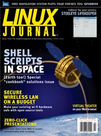

Shutdown Archive web server
Search:
Linux Journal
Issue #132/April 2005

Features
Finding Your Way with GPSdrive
by Charles Curley
Integrate this navigation package with speech synthesis, wireless network mapping and your choice of map data.
Building Your Own Live CD
by Daniel Barlow
Live CDs let you turn any computer into a temporary Linux box. Make it a Linux box with your chosen software and configuration.
Building Impress and PowerPoint Slides with LaTeX and Perl
by Paul Barry
Take advantage of Openoffice.org's well-documented file formats to create presentations as easily as a Web site.
Indepth
Performers Go Web
by Patricia Jung
That on-line animation was pretty funny, but how about performing a show live? Here's new software that makes it possible.
My Favorite bash Tips and Tricks
by Prentice Bisbal
These command-line stunts will have you manipulating lots of files as easily as you would do one before. The sooner you start, the more time you'll save.
File Synchronization with Unison
by Erik Inge Bolso
Is the latest version of that file on my server, my desktop or my laptop? With Unison, the answer is “yes”.
Using C for CGI Programming
by Clay Dowling
Your Web app doesn't have to be written in some newfangled scripting malarkey. Check out the speed when you try it in C.
Part III: AFS—A Secure Distributed Filesystem
by Alf Wachsmann
Reconfigure servers without changing mount points on the clients with this Kerberos-authenticated network filesystem.
Embedded
Linux on a Small Satellite
by Christopher Huffine
If you need to get a satellite launched in a year, think standard parts, creative reuse and shell scripts.
Toolbox
At the Forge
Column 100
by Reuven M. Lerner
Kernel Korner
Dynamic Interrupt Request Allocation for Device Drivers
by Dr B. Thangaraju
Cooking with Linux
The Cook's Collection
by Marcel Gagné
Paranoid Penguin
Securing WLANs with WPA and FreeRADIUS, Part I
by Mick Bauer
Columns
Linux for Suits
The No-Party System
by Doc Searls
EOF
Open Access for Science
by Christopher Frenz
Review
LifeKeeper
by Sean Tierney
Departments
From the Editor
Letters
upFRONT
New Products
Best of Technical Support
Archive Index
Shutdown Archive web server
Search:
Copyright © 1994 - 2018
Linux Journal
. All rights reserved.